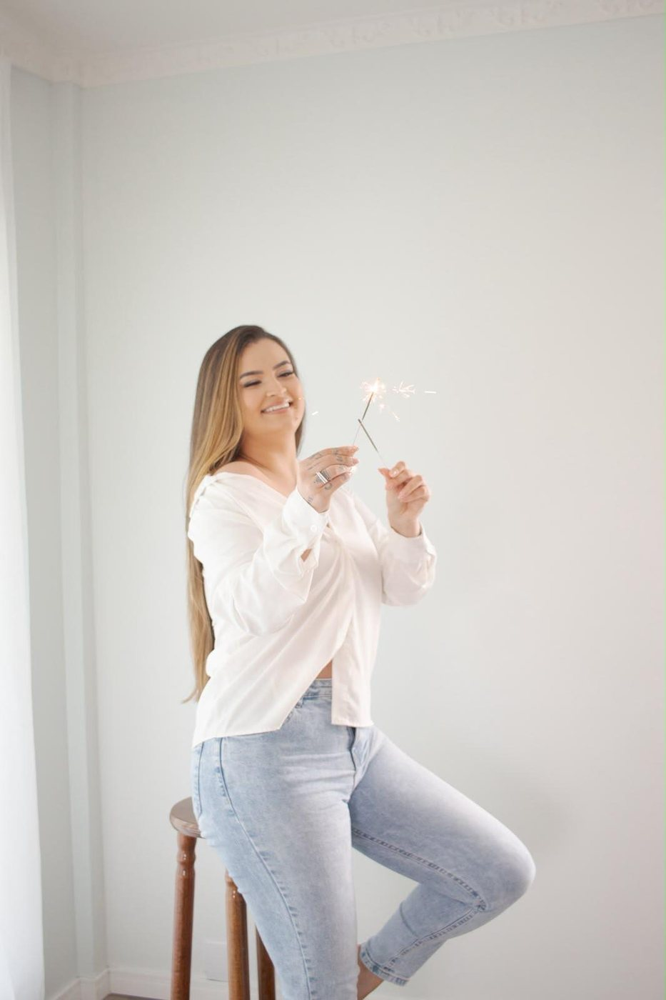

9 meses
Gestante
A barriga no auge, entre 30 e 36 semanas. Sozinha, com o pai ou com os irmãos mais velhos.
Estúdio de fotografia afetiva
Gestação, primeiro ano, 15 anos, família. Fotografo o que passa rápido demais — com luz natural, sem pose forçada e com muito colo no meio do caminho.
Estúdio em [cidade] · atendimento com hora marcada



Sobre mim
Trabalho com fotografia de família há anos e nunca me acostumei com a parte mais bonita do ofício: uma mãe se vendo bonita grávida, um bebê descobrindo o bolo com as mãos, uma menina de 15 anos entendendo que já é dona da própria história.
Meu estúdio é claro, silencioso e preparado para receber criança, cansaço e imprevisto. Ninguém precisa saber posar: eu conduzo, brinco, espero. As melhores fotos quase sempre chegam no intervalo entre uma pose e outra.
Ensaios
Cada ensaio nasce de um momento específico. Escolha o seu ponto na linha do tempo.
9 meses
A barriga no auge, entre 30 e 36 semanas. Sozinha, com o pai ou com os irmãos mais velhos.
1 ano
Cenário montado no tema da festa, bolo à vontade e as mãozinhas fazendo o resto.
2 a 10
Páscoa, Natal, aniversário. Cenários sazonais com sessões curtas e no ritmo da criança.
15 anos
Do clássico ao divertido, com troca de looks e balões. O ensaio que ela vai mostrar pra sempre.
30 e tantos
Para marcar uma virada de idade ou simplesmente para se ver bem. Luz suave ou preto e branco.
sempre
O retrato que fica na parede. Registro anual para acompanhar como todo mundo mudou.
Portfólio
Nenhuma foto nesta categoria ainda.
Tem muito mais no Instagram — @andriellipassosfotografia
Como funciona
Você me conta o motivo do ensaio e eu envio a agenda e os pacotes disponíveis. A data fica reservada com o sinal.
Ajudo na escolha de roupas e cores, monto o cenário do tema e explico o que levar. Sem surpresa no dia.
Sessão no estúdio, com tempo para amamentar, trocar de roupa e respirar. Criança manda no ritmo — e está tudo bem.
Você escolhe as favoritas em uma galeria online e recebe as fotos tratadas em até [X] dias.
Investimento
Valores e o que está incluído em cada pacote — atualizar com o material do estúdio.
R$ [valor]
Mais escolhido
R$ [valor]
R$ [valor]
Sinal de reserva de [X]% na confirmação da data. Formas de pagamento: Pix, cartão em até [X]x.
Depoimentos
“Eu estava insegura com o corpo e ela me fez rir do começo ao fim. Quando vi as fotos, chorei.”
“Minha filha detesta câmera e não largou a Andrielli. O cenário do smash the cake ficou perfeito.”
“Atendimento impecável, entrega no prazo e fotos que já viraram quadro na sala.”
Contato
Me conte qual fase você quer registrar e a data que tem em mente. Respondo em até 24 horas com a agenda aberta e os pacotes.
[Endereço], [bairro] — [cidade]/[UF]